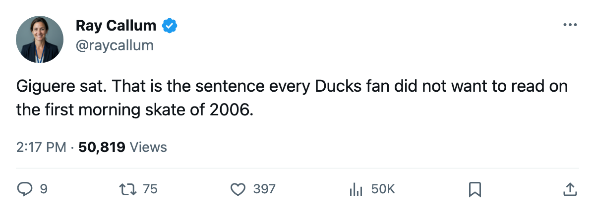
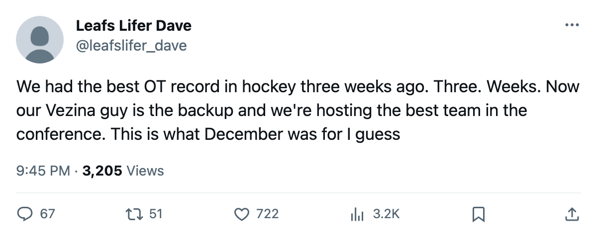

ANA
ANAGoalie Watch: Anaheim Hands the Crease to Bryzgalov After Six Straight
The Vezina winner sits. The Ducks have lost 6 on end and dropped from 5th in the West to 10th in two weeks.
 Ray CallumSenior correspondent · Home Ice Network
Ray CallumSenior correspondent · Home Ice Network
 Jean-Sebastien Giguere91 is the backup in Anaheim. The Ducks moved him to G2 on the morning-skate sheet and slid
Jean-Sebastien Giguere91 is the backup in Anaheim. The Ducks moved him to G2 on the morning-skate sheet and slid  Ilja Bryzgalov73 into the starting slot ahead of tonight's home date with
Ilja Bryzgalov73 into the starting slot ahead of tonight's home date with  Dallas Stars, with the club on a 6-game losing streak and 1 point out of the Pacific's bottom tier.
Dallas Stars, with the club on a 6-game losing streak and 1 point out of the Pacific's bottom tier.
Giguere has 30 starts in 39 games, a 77 percent share. Bryzgalov has 9. The Vezina Trophy from last spring belongs to Giguere. This season his club has gone from 5th in the West at 37 points to 10th at 42, and the 6-game skid is the longest in the Pacific.
Anaheim has scored 25 goals and conceded 30 across the losing stretch. The club sat 8-1 in overtime games through late December, the most in the league, and rode a 6-game win streak into the holiday break. That buffer is gone. The 11 overtime and shootout losses total 4 in the past 14 games. They are finding ways to lose close ones.
 Erik Cole73 is back from a head injury into the top-9 wings. Tuomas Lydman73 and
Erik Cole73 is back from a head injury into the top-9 wings. Tuomas Lydman73 and  Vyacheslav Kozlov74 landed on injured reserve within the same window (between 2005-12-29 and 2006-01-04), with returns targeted for 2006-01-18 and 2006-01-24 respectively.
Vyacheslav Kozlov74 landed on injured reserve within the same window (between 2005-12-29 and 2006-01-04), with returns targeted for 2006-01-18 and 2006-01-24 respectively.  Samuel Pahlsson64 moved from right wing on the 4th line to left wing on the 2nd. The coach is reassembling a bottom-six while the starter sits.
Samuel Pahlsson64 moved from right wing on the 4th line to left wing on the 2nd. The coach is reassembling a bottom-six while the starter sits.
Dallas Stars is 23-9-6, the Pacific leader by 12 points over  St. Louis Blues, on a 2-game win streak. The Stars have conceded 83 goals in 41 games, the fewest in the West. They are on the road for tonight's game and the Ducks are 11-7 at home this season, a record that makes the losing streak harder to explain.
St. Louis Blues, on a 2-game win streak. The Stars have conceded 83 goals in 41 games, the fewest in the West. They are on the road for tonight's game and the Ducks are 11-7 at home this season, a record that makes the losing streak harder to explain.
Bryzgalov's 9 starts have not been a losing share of games prior to this skid; he carries a 23 percent workload and a fresh crease. Whether this stops the slide or the trouble is bigger than the crease will show in 60 minutes against the division leader.

